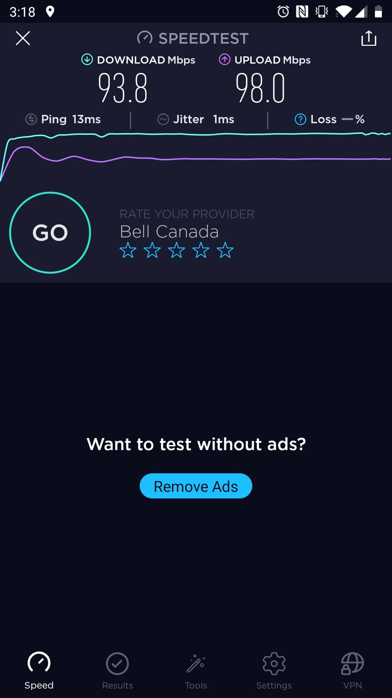
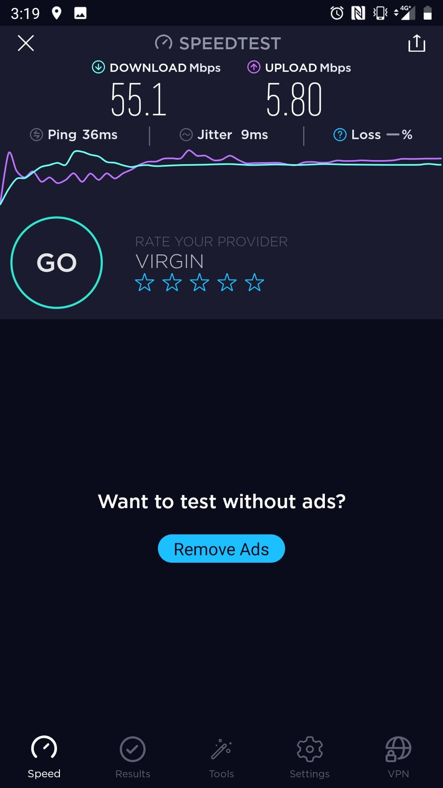
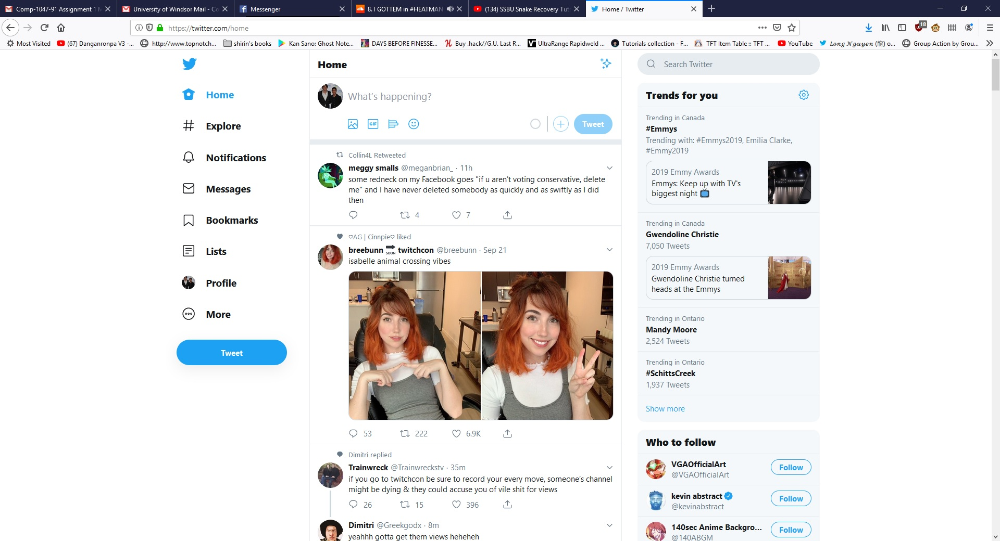
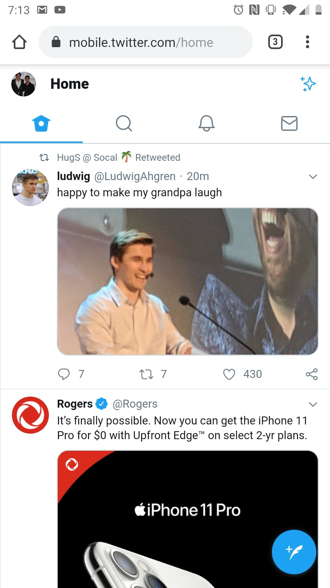
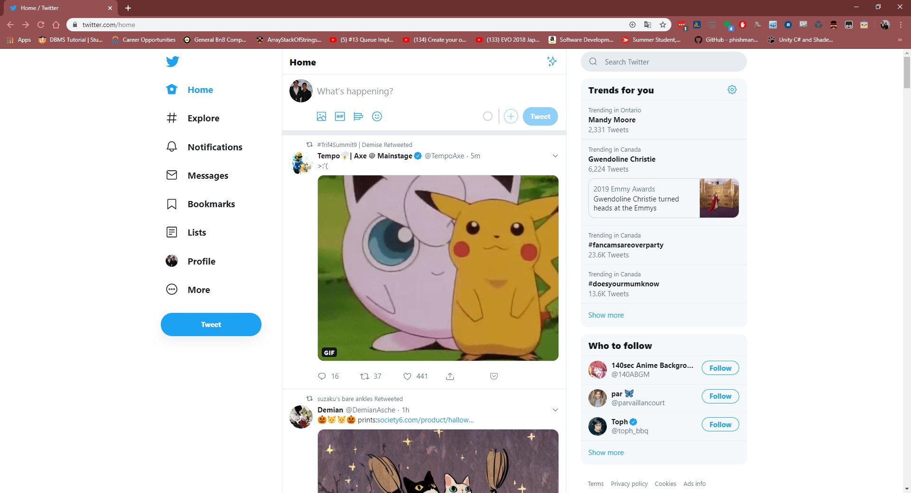
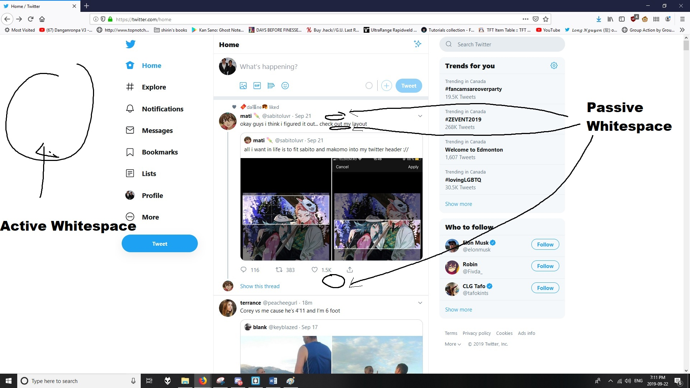

Question 1: Using 3 different internet networks (university wireless, university wired- common lab machines, home, coffee shop ,4G data plan for cellphone, etc.):
a. Measure the speed of each network using http://speedtest.net/, and take a snapshot for each one, include them in the answer level and caption them.
b. What is the minimum internet speed (connection speed) you may consider as a web designer and why?
The miminum internet speed that I consider as a web designer would be a little slower than the average user. If I optimize my site enough to run smooth on slow connections, it will have no problem running on a higher-speed connection.
Figure 1: Wireless connection speed from desktop computer.

Figure 2: Wireless connection speed from my cellphone.

Figure 3: 4G speed from my cellphone.
Question 2: Choose a website you like that has a responsive design:
a. Take 3 snapshots of the website using 3 different type of devices (laptop, wide-screen desktop, smartphone, tablet, etc..).
b. Mention clearly the resolution and type of each device.
c. Does it have accessibility features? give an example from the website. to check that you may right click on the main page, select view source or page source (depends on the browser), find alt attribute in img tag? is there any with actual text not only alt=""?
d. Which kind of viewing pattern does it have?
e. Does it have active white space or passive white space/ both/ none of them? example with screenshot is required.

Figure 4: Desktop Screencap of twitter's main page (1080x1920 resolution monitor)

Figure 5: Screenshot of twitter from my cellphone's internet browser(1080x1920(401 ppi) resolution cellphone screen)

Figure 6: Desktop Screencap of twitter's main page (1080x1920 resolution laptop monitor)
This website does not have native accesssibility features for the most part due to it being a website based on user submissions. However, twitter does have a method for users to add descriptions for visually impaired individuals. Twitter also supports third party screen-reader software, such as apple's VoiceOver function for Mac and iOS. Twitter uses an F style viewing patter, since readers scroll down and read from left to right for each post. On non-mobile devices, twitter uses active AND passive whitespace. The active whitespace is seen on each side of the website to emulate a mobile aesthetic. The passive whitespace can be seen everywhere else, such as the space between letters, pictures, and posts.

Figure 7: Example of whitespace usage on twitter's site.
Question 3: True or False
a. The first time you visit a site, the entire contents of the HTML file, every image referenced in the HTML code, and any CSS style sheets are downloaded to your hard drive.
True.
b. To be successful, your web site design must be portable and accessible by users who have different browsers, operating systems, and computer platforms.
True.
c. When pages share the same color scheme, logo, structure, and navigation, the web site offers a smooth transition from the main page to a secondary page.
True.
d. You can assume that a document that is perfectly legible on paper will be easily legible online.
False.
Question 4: Fill in the Blanks
a. Fixed-width designs tend to have the same proportions as the printed page, which enforces scanning the page using paper-based reading habits.
b. White space that is used deliberately is called active whitespace.
c. Provide direct links to the areas of your site that you find or expect to be in the greatest demand.
d. A computer monitor’s screen resolution is the width and height of the computer screen in pixels